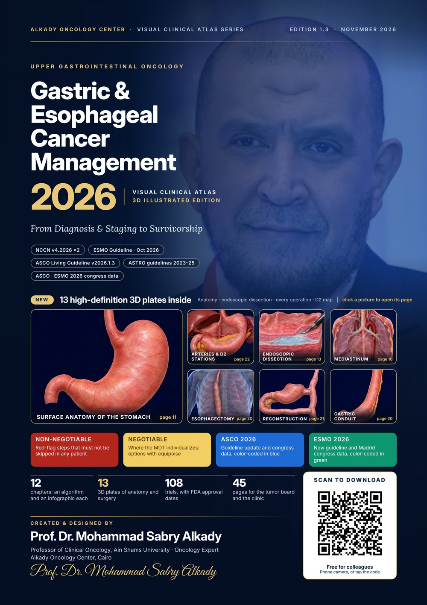
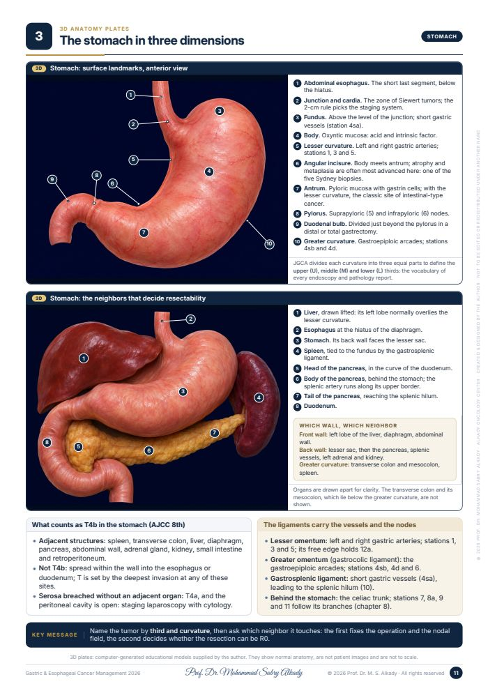
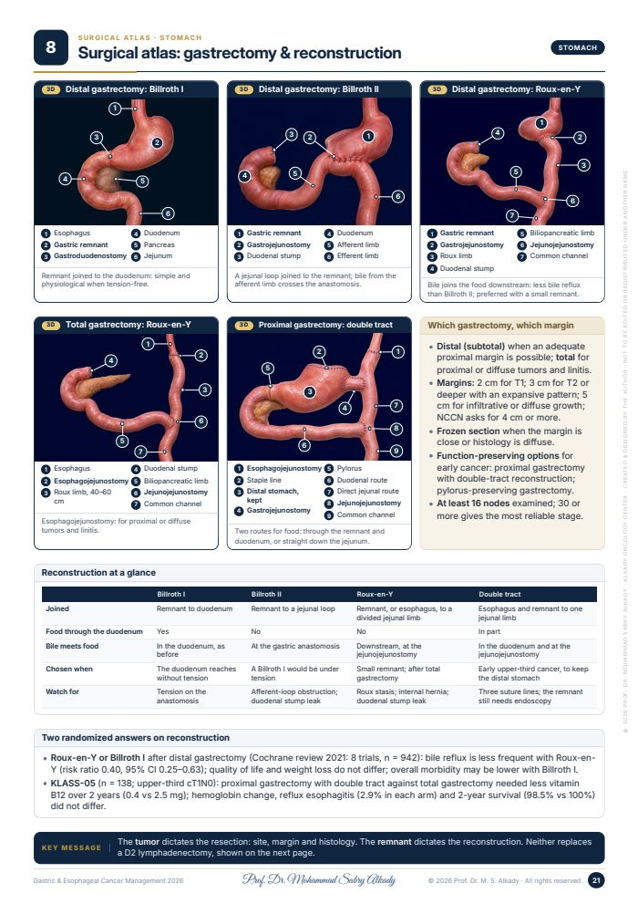
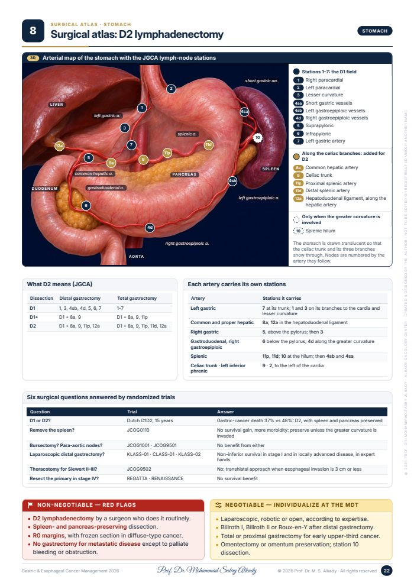
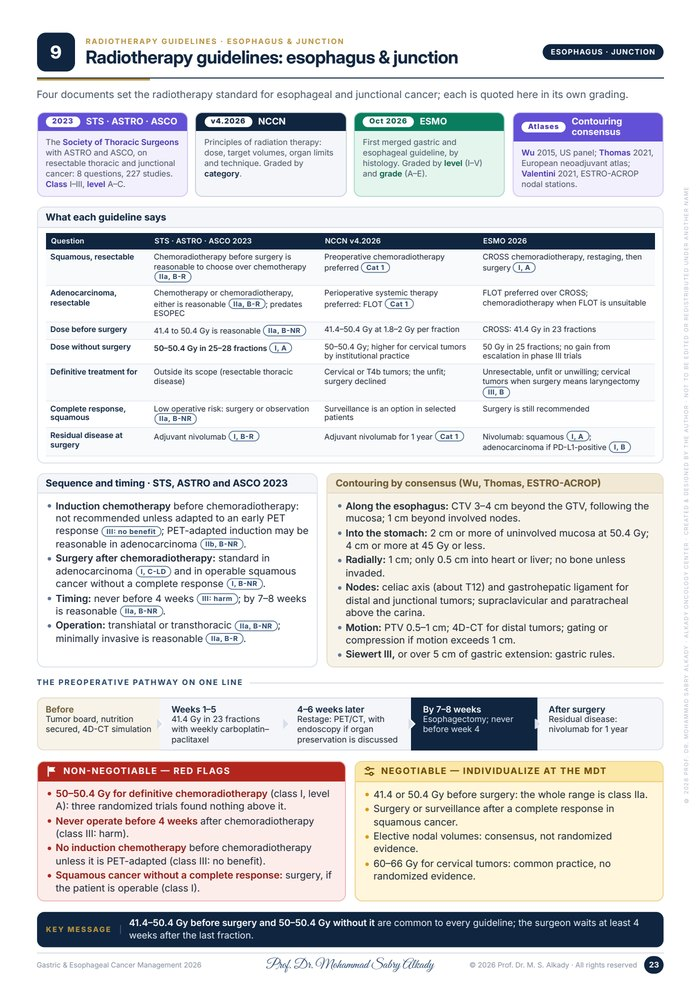
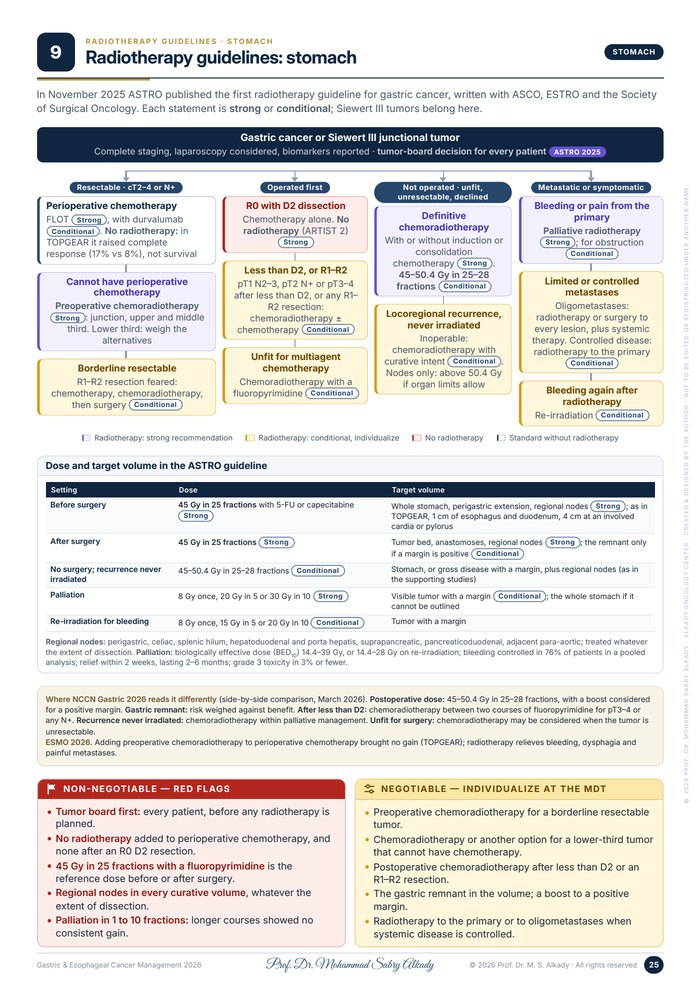

Upper gastrointestinal oncology
Gastric & Esophageal Cancer Management 2026
From Diagnosis & Staging to Survivorship
3D illustrated editionNew · radiotherapy guidelines- Non-negotiableRed-flag steps that must not be skipped in any patient
- NegotiableWhere the multidisciplinary team individualizes
- ASCO 2026Guideline update and congress data, in blue
- ESMO 2026New guideline and Madrid congress data, in green
Inside
- 12chapters, each a decision algorithm plus an infographic
- 13three-dimensional plates of anatomy and surgery
- 108trials in a compendium with FDA approval dates
- 135references, each published paper with its DOI
A look at the plates



New in edition 1.3: radiotherapy guidelines
Two pages in chapter 9 set out what the radiotherapy guidelines say, each in its own grading: the ASTRO guideline for gastric cancer, the STS, ASTRO and ASCO guideline for esophageal and junctional cancer, NCCN and ESMO 2026, with the consensus contouring rules.

